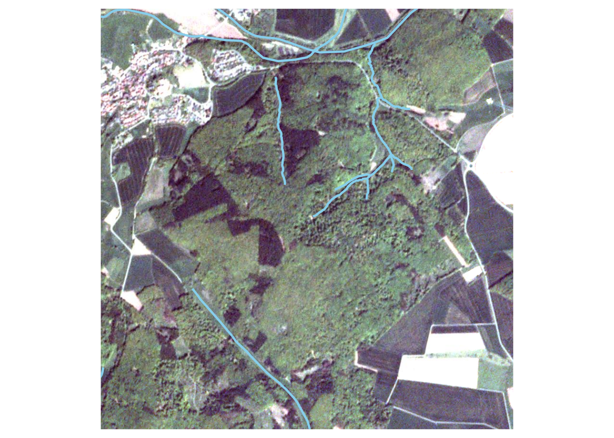
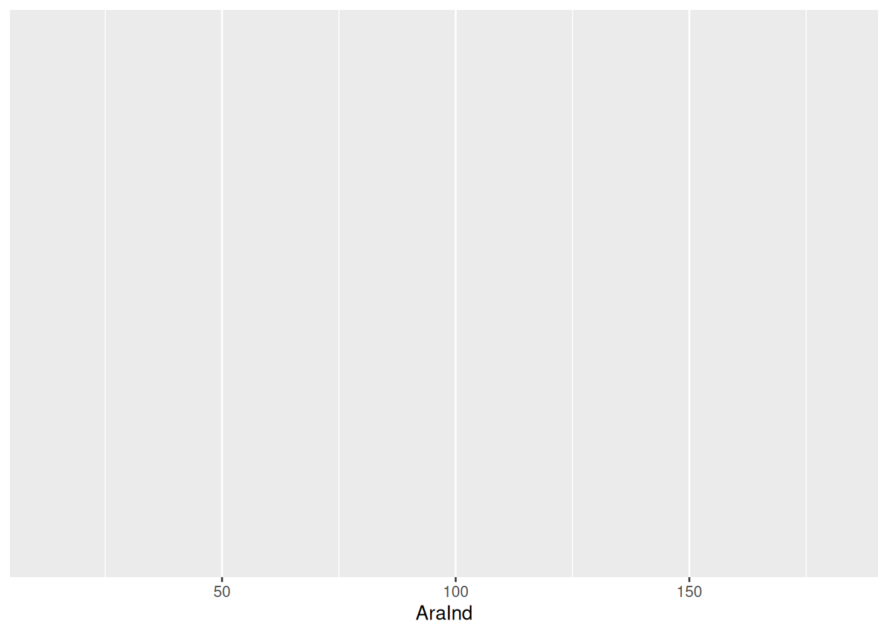

2 Ecological data
Take a few minutes to think about
- what kind of data you know or have used before?
- what kind of data would be interesting for you?

Figure 2.1: Marburg Open Forest, 2019-05-13 Planetscope RGB
Ask yourself how you could describe and quantify a landscape like the one in Fig. 2.1.
2.1 Plot surveys
- plots with ID and surveyed environmental information
- bread and butter of ecology
| plotID | soil_ph | soil_temperature | forest_type |
|---|---|---|---|
| P1 | 5.5 | 10 | coniferous |
| P2 | 5.4 | 11 | coniferous |
| P3 | 6.1 | 12 | deciduous |
2.2 Time Series

Figure 2.2: Visualization of time series data
- continuous measurements
- measurement interval flexible
- mainly climate, soil, remote sensing
| date | temperature | ph | o2 |
|---|---|---|---|
| 2021-06-01 | 18.06 | 8.12 | 11.06 |
| 2021-06-01 | 18.08 | 8.10 | 10.62 |
| 2021-06-01 | 17.93 | 8.15 | 11.20 |
| 2021-06-01 | 17.78 | 8.19 | 11.92 |
| 2021-06-01 | 17.79 | 8.13 | 11.39 |
2.3 Species Lists
- mostly plot based
- monitoring of conservation sites
- biodiversity assessment
| species | n |
|---|---|
| Digitalis purpurea | 4 |
| Galium odoratum | 25 |
| Fagus Sylvatica | 20 |
| … | … |
What are the differences between the plot based survey example and the species list example?
2.4 Geospatial Data
- defined by explicit location on the earth surface
- information attached to coordinates
| tree_id | easting | northing | species_code | dbh | geom |
|---|---|---|---|---|---|
| r00430 | 477422.4 | 5631970 | BUR | 0.12 | POINT (477422.4 5631970) |
| r01106 | 477411.7 | 5631946 | BUR | 0.68 | POINT (477411.7 5631946) |
| b00818 | 477796.0 | 5632316 | BUR | 0.23 | POINT (477796 5632316) |
| r00170 | 477816.9 | 5632201 | EIT | 0.59 | POINT (477816.9 5632201) |
| r00334 | 477737.2 | 5632250 | ERS | 0.68 | POINT (477737.2 5632250) |
2.5 Want more?

Turner (2014) : Sensing Biodiversity
- Animal movement data
- Lab / Field experiments
- Individuum based information (e.g. traits)
- Camera Traps
- Socio-Economic data (also useful for landscape ecology)
- …
References
Turner, W. 2014. “Sensing Biodiversity.” Science 346 (6207): 301–2. https://doi.org/10.1126/science.1256014.